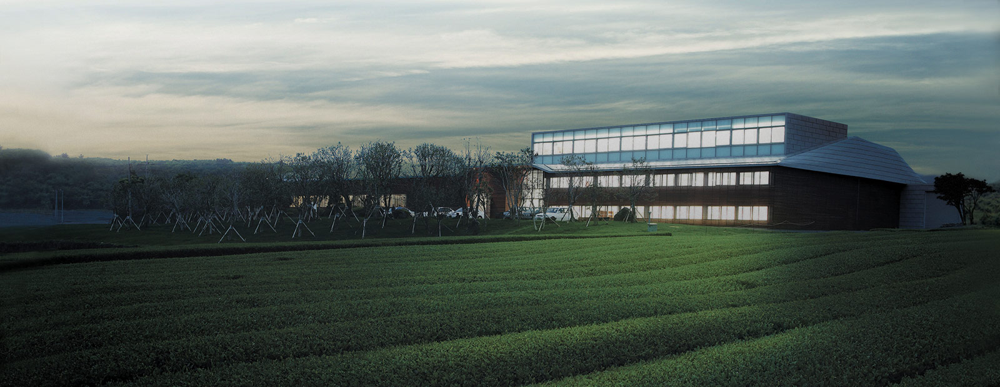
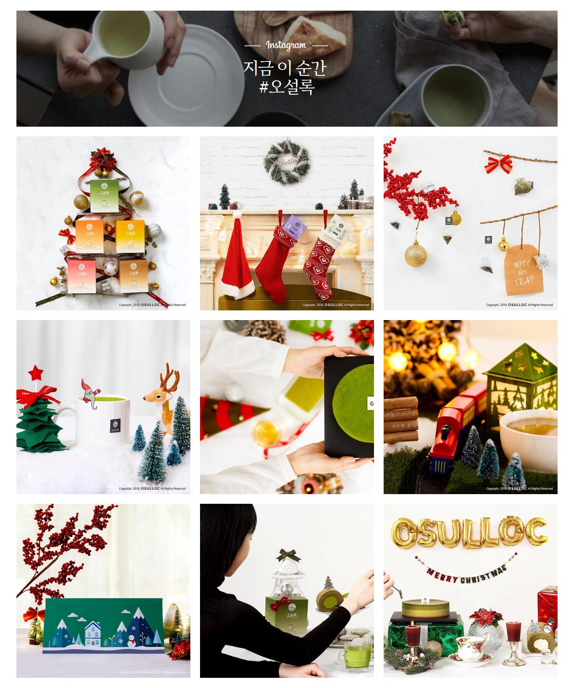

OSULLOC

아름다운 집념
아모레퍼시픽의 창업주이자 오설록의 장원인 고(故) 서성환 회장은
천년의 역사를 가졌지만 어느 순간 자취를 감춰버린 우리나라의 차문화를 늘 아쉬워했습니다.
우리나라에 고유의 차문화를 정착시키겠다는 그의 일념으로 오설록의 아름다운 집념은 시작되었습니다.
제주와의 인연
연평균 기온이 14℃ 이상, pH4.0~5.0의 약산성 토양, 연간 강우량 1,600mm 이상의
고온 다습한 기후에서 잘 자라는 차나무의 재배 조건에 가장 최적의 산지, 제주.
그렇게 제주와 오설록의 인연은 시작되었습니다.
그러나, 돌과 바람이 전부였던 제주의 버려진 땅.
억척스런 제주 사람의 손조차 한 번도 닿지 않은 채 버려진 3곳의 땅을 제주의 자연을 이해하고 극복하며
푸른 꿈을 45여년을 키워온 결과, 제주의 땅은 세계적인 녹차 산지로 손꼽히는 최고의 차 재배지로 거듭났으며
한국의 차문화 정립을 위해 땀과 열정들이 모여 세계적으로 권위 있는 명차 대회에서
매년 수상을 이어가며 한국의 차문화 전파를 위해 오설록의 아름다운 집념은 계속되고 있습니다.
천혜의 자연과 사람의 정성으로 만든 명차
오설록은 생산에서 재배, 그리고 판매까지 한 곳에서 이루어지는 세계적으로도 손꼽히는 최대 규모의 국산 차 브랜드입니다.
오설록은 제주라는 천혜의 자연 안에서 오설록의 자연과의 상생을 통한
따뜻한 과학영농을 통해 최상의 찻잎을 얻기 위해 노력하고 있습니다.
이는 전통적인 방식을 토대로 현대의 기술을 더해 최상의 차를 만들어 가는 것,
즉 전통을 유지하되 시대의 흐름을 받아들이는 오설록의 자세입니다.
제주의 자연으로 가꾼 유기농
오설록의 유기농이란 단순히 가만히 놓아두는 것이 아니라, 자연 안에서
더 안전하고 세계적으로 인정받는 품질을 위하여 자연과 더불어 오설록의 연구와 기술을 더한
선진 유기농법을 실현하고 있습니다. 2010년 이후부터는 오설록 차밭 전체에서 국내뿐 아니라
미국, 유럽 등 전 세계적으로 대표 유기농 인증을 획득한 믿을 수 있는 품질의 차만을 재배하고 있습니다.
제주의 자연으로 빚은 발효
오설록은 한국인의 발효과학의 지혜와 제주의 자연과 정성의 깊이를 더해
한국적이면서도 오설록만의 시그니처 발효법을 완성하였습니다. 한국의 전통 장류에서 추출한 균으로 발효하거나,
제주의 자연소재에서 다시 한번 숙성하여 풍미와 맛의 깊이를 더한 건강한 발효명차를 만들어 가고 있습니다.
TEA HOUSE
오설록 티 패키지로 만든 나만의 액자
박준우 셰프의 '녹차 베린' 레시피
아이스 블렌딩 티
그린티 아포가토 레시피
그린티 토르테 DIY
녹차 밀크 스프레드 빼빼로 레시피 스톱모션
#HASHTAG
